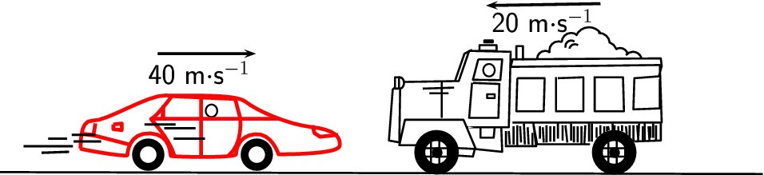

<code>
(0,-1.821)(16.181,1.84)
\definecolor{color4351}{rgb}{0.9764705882352941,0.023529411764705882,0.023529411764705882}
\definecolor{color6332b}{rgb}{0.996078431372549,0.996078431372549,0.996078431372549}
\psline[linewidth=0.042cm](0.0,-1.76)(16.16,-1.8)
\pscircle[linewidth=0.22600001,dimen=outer,fillstyle=crosshatch*,hatchwidth=0.04,hatchangle=0.0](9.251,-1.34){0.47}
\pscircle[linewidth=0.22600001,dimen=outer,fillstyle=crosshatch,hatchwidth=0.04,hatchangle=0.0](13.013958,-1.34){0.47}
\psline[linewidth=0.06cm,arrowsize=0.05291667cm 2.0,arrowlength=1.4,arrowinset=0.4]{->}(12.721,1.81)(10.301,1.77)
\pscircle[linewidth=0.162,dimen=outer](3.141,-1.39){0.34}
\psbezier[linewidth=0.076,linecolor=color4351,fillcolor=black](1.7028656,-1.26014)(1.681,-1.2751805)(2.7026339,-1.4508349)(2.701,-1.3990053)(2.699366,-1.3471757)(2.7307897,-0.9182694)(3.181,-0.9390845)(3.6312103,-0.9598996)(3.6008909,-1.397767)(3.621,-1.4166946)(3.641109,-1.4356222)(4.993906,-1.4679432)(5.001,-1.381316)(5.008094,-1.2946888)(5.041,-0.9921523)(5.401,-0.9567738)(5.761,-0.9213953)(5.901,-1.381316)(5.901,-1.381316)(5.901,-1.381316)(7.1738386,-1.3936263)(7.197419,-1.2029315)(7.2209997,-1.0122367)(7.0983343,-0.8596807)(6.5870013,-0.8024722)(6.0756683,-0.7452637)(5.421,-0.4437852)(5.201,-0.2668926)(4.981,-0.09)(3.886638,-0.1541096)(3.510935,-0.1350401)(3.135232,-0.11597062)(2.261831,-0.6866751)(1.9611611,-0.6689858)(1.6604912,-0.65129656)(1.7247312,-1.2450994)(1.7028656,-1.26014)
\psline[linewidth=0.076cm,linecolor=color4351](4.261,-0.15)(4.261,-1.41)
\psellipse[linewidth=0.034,dimen=outer](4.481,-0.46)(0.14,0.15)
\psline[linewidth=0.06cm,arrowsize=0.05291667cm 2.0,arrowlength=1.4,arrowinset=0.4]{->}(3.341,0.75)(5.421,0.75)
\psline[linewidth=0.076cm,linecolor=color4351](5.081,-0.63)(3.221,-0.63)
\pscircle[linewidth=0.162,dimen=outer](5.441,-1.39){0.34}
\psbezier[linewidth=0.076,linecolor=color4351](4.981,-0.19)(5.001,-0.29)(5.0882454,-0.6047234)(5.0882454,-0.6047234)(5.0882454,-0.6047234)(5.161,-1.15)(4.841,-1.413337)
\psbezier[linewidth=0.076,linecolor=color4351](3.6543334,-0.13)(3.441,-0.43000504)(3.2343333,-0.6387579)(3.201,-0.63)(3.1676667,-0.6212421)(3.581,-1.01)(3.701,-1.43)
\psline[linewidth=0.076cm,linecolor=color4351](5.081,-0.63)(5.921,-0.63)
\psline[linewidth=0.076,linecolor=color4351](2.401,-0.75)(2.581,-0.73)(2.581,-0.87)(2.401,-0.85)(2.401,-0.75)
\psline[linewidth=0.076,linecolor=color4351](2.021,-0.73)(1.981,-0.97)(1.761,-0.95)(2.021,-0.99)(2.721,-1.17)
\psline[linewidth=0.076,linecolor=color4351](3.461,-0.61)(3.461,-0.37)(3.441,-0.63)
\psline[linewidth=0.076,linecolor=color4351](3.641,-0.15)(4.981,-0.21)(4.181,-0.15)(4.881,-0.19)(4.961,-0.21)
\psline[linewidth=0.076,linecolor=color4351](6.621,-0.77)(6.661,-0.93)(6.781,-1.01)(7.161,-0.97)
\psline[linewidth=0.048cm](1.541,-1.21)(0.501,-1.21)
\psline[linewidth=0.048cm](1.421,-1.05)(1.021,-1.05)
\psline[linewidth=0.048cm](1.461,-1.33)(0.881,-1.35)
\psline[linewidth=0.048cm](4.341,-1.05)(3.681,-1.05)
\psline[linewidth=0.048cm](2.141,-1.11)(1.561,-1.11)
\psline[linewidth=0.048cm](2.021,-0.97)(1.521,-0.97)
\psline[linewidth=0.048cm](3.721,-0.75)(3.061,-0.75)
\psline[linewidth=0.048cm](4.141,-0.83)(3.481,-0.83)
\psdots[dotsize=0.222](9.261,-1.35)
\psdots[dotsize=0.222](13.021,-1.35)\psline[linewidth=0.04](8.821,-1.19)(8.461,-1.19)(8.581,-0.65)(9.821,-0.65)(10.081,-1.27)(9.681,-1.25)(9.701,-1.41)(10.021,-1.43)(10.061,-1.27)(10.641,-1.33)(10.621,-0.81)(9.921,-0.81)(10.181,-0.81)(10.181,-1.03)(10.461,-1.03)(10.481,-0.81)(10.781,-0.81)(10.821,0.79)(9.941,0.81)(9.721,0.17)(8.481,0.15)(8.461,-1.13)(8.241,-1.09)(8.321,-0.01)(8.481,0.15)
\psline[linewidth=0.04](10.133727,0.63)(10.641,0.63)(10.601,0.19)(10.021,0.19666667)(10.133727,0.63)
\psline[linewidth=0.04](10.001,0.83)(9.841,0.75)(9.641,0.17)
\psline[linewidth=0.04](10.021,0.13)(10.581,0.10823529)(10.561,-0.61)(9.941,-0.61)(10.001,0.13)
\psline[linewidth=0.04](10.861,-0.71)(14.021,-0.71)(13.981,0.51)(10.821,0.47)(10.861,0.63)(14.001,0.65)(14.021,0.49)(13.961,0.27)(13.441,0.23)(13.421,-0.43)(13.981,-0.41)(13.981,0.21)
\psline[linewidth=0.04](10.961,0.23)(11.541,0.23)(11.521,-0.47)(10.941,-0.47)(10.961,0.23)
\psline[linewidth=0.04](11.781,0.25)(11.781,-0.47)(12.361,-0.47)(12.361,0.25)(11.821,0.23)
\psline[linewidth=0.04](12.601,0.27)(12.601,-0.47)(13.221,-0.47)(13.201,0.25)(12.621,0.25)
\psline[linewidth=0.04cm](9.361,0.15)(9.361,-0.61)
\psline[linewidth=0.04cm](8.961,0.01)(9.621,0.03)
\psline[linewidth=0.04cm](9.101,-0.09)(9.501,-0.09)
\psline[linewidth=0.04](10.701,-1.21)(11.361,-1.21)(11.301,-0.73)(11.381,-1.17)(12.501,-1.17)
\psline[linewidth=0.04](14.001,-0.73)(14.001,-1.09)(13.441,-1.11)
\psline[linewidth=0.04cm](10.721,-0.89)(10.721,-1.19)
\psline[linewidth=0.04cm](10.781,-0.89)(10.801,-1.17)
\psline[linewidth=0.04cm](10.881,-0.79)(10.881,-1.17)
\psline[linewidth=0.04cm](10.961,-0.77)(10.961,-1.19)
\psline[linewidth=0.04cm](11.021,-0.79)(11.041,-1.13)
\psline[linewidth=0.04cm](11.101,-0.73)(11.121,-1.17)
\psline[linewidth=0.04cm](11.181,-0.81)(11.201,-1.17)
\psline[linewidth=0.04cm](11.281,-0.93)(11.281,-1.19)
\psline[linewidth=0.04cm](11.441,-0.79)(11.441,-1.05)
\psline[linewidth=0.04cm](11.501,-0.81)(11.521,-1.13)
\psline[linewidth=0.04cm](11.581,-0.77)(11.581,-1.13)
\psline[linewidth=0.04cm](11.661,-0.79)(11.661,-1.11)
\psline[linewidth=0.04cm](11.741,-0.79)(11.741,-1.11)
\psline[linewidth=0.04cm](11.821,-0.71)(11.821,-1.05)
\psline[linewidth=0.04cm](11.921,-0.77)(11.921,-1.09)
\psline[linewidth=0.04cm](11.981,-0.77)(12.021,-1.13)
\psline[linewidth=0.04cm](12.101,-0.73)(12.101,-1.09)
\psline[linewidth=0.04cm](12.161,-0.79)(12.161,-1.13)
\psline[linewidth=0.04cm](12.241,-0.79)(12.241,-1.13)
\psline[linewidth=0.04cm](12.321,-0.79)(12.321,-1.17)
\psline[linewidth=0.04cm](12.401,-0.77)(12.381,-1.17)
\psline[linewidth=0.04cm](12.481,-0.73)(12.481,-1.11)
\psline[linewidth=0.04cm](12.541,-0.73)(12.541,-1.11)
\psline[linewidth=0.04cm](12.641,-0.81)(12.641,-1.03)
\psline[linewidth=0.04cm](12.721,-0.77)(12.721,-0.97)
\psline[linewidth=0.04cm](12.801,-0.79)(12.801,-0.97)
\psline[linewidth=0.04cm](13.261,-0.79)(13.281,-0.95)
\psline[linewidth=0.04cm](12.881,-0.79)(12.901,-0.87)
\psline[linewidth=0.04cm](12.981,-0.73)(12.981,-0.89)
\psline[linewidth=0.04cm](13.101,-0.79)(13.101,-0.89)
\psline[linewidth=0.04cm](13.181,-0.77)(13.181,-0.89)
\psline[linewidth=0.04cm](13.021,-0.77)(13.021,-0.87)
\psline[linewidth=0.04cm](12.861,-0.79)(12.861,-0.89)
\psline[linewidth=0.04cm](13.341,-0.77)(13.341,-1.01)
\psline[linewidth=0.04cm](13.421,-0.77)(13.421,-1.11)
\psline[linewidth=0.04cm](13.501,-0.77)(13.521,-1.03)
\psline[linewidth=0.04cm](13.541,-0.73)(13.521,-1.09)
\psline[linewidth=0.04cm](13.621,-0.79)(13.621,-1.09)
\psline[linewidth=0.04cm](13.661,-0.71)(13.661,-1.09)
\psline[linewidth=0.04cm](13.741,-0.79)(13.761,-1.09)
\psline[linewidth=0.04cm](13.781,-0.79)(13.781,-1.03)
\psline[linewidth=0.04cm](13.841,-0.73)(13.841,-1.03)
\psline[linewidth=0.04cm](13.901,-0.77)(13.901,-1.09)
\psline[linewidth=0.04](10.941,0.61)(10.941,0.91)(11.081,0.91)(11.081,0.61)
\psellipse[linewidth=0.034,dimen=outer](10.361,0.4)(0.14,0.15)
\psframe[linewidth=0.04,dimen=outer](10.501,-0.09)(10.301,-0.21)
\psframe[linewidth=0.04,dimen=outer](10.541,0.95)(10.141,0.79)
\psframe[linewidth=0.04,dimen=outer](10.461,1.05)(10.241,0.97)
\psarc[linewidth=0.04](11.551,0.64){0.17}{55.619656}{180.0}
\psarc[linewidth=0.04](11.831,0.82){0.19}{68.19859}{195.94539}
\psarc[linewidth=0.04](12.101,0.91){0.12}{54.462322}{195.25511}
\psarc[linewidth=0.04](12.101,0.99){0.2}{49.398705}{180.0}
\psarc[linewidth=0.04](12.821,0.75){0.26}{20.556046}{71.56505}
\psarc[linewidth=0.04](12.691,0.96){0.23}{6.340192}{93.36646}
\psarc[linewidth=0.04](12.481,1.01){0.3}{36.869896}{155.55605}
\psarc[linewidth=0.04](13.411,0.6){0.19}{18.434948}{140.71059}
\psarc[linewidth=0.04](13.141,0.71){0.16}{14.036243}{123.69007}
\psellipse[linewidth=0.04,dimen=outer,fillstyle=solid,fillcolor=color6332b](8.471,0.13)(0.11,0.14)
\psframe[linewidth=0.04,dimen=outer,fillstyle=solid,fillcolor=color6332b](8.473331,0.27)(8.349271,-0.01)
\psarc[linewidth=0.04](12.181,0.83){0.12}{56.309933}{165.96376}
\rput(4.218125,0.35){\LARGE 40 m$\cdot$s$^{-1}$}
\rput(11.497031,1.45){\LARGE 20 m$\cdot$s$^{-1}$}
</code>